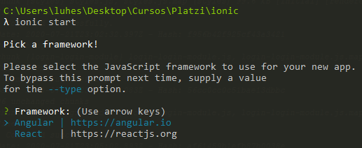
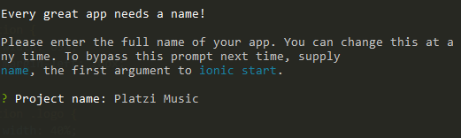
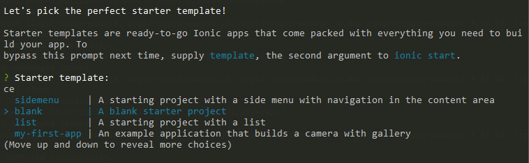

Ionic es un framework para el desarrollo de aplicaciones híbridas. Con Ionic podemos construir aplicaciones para móviles Android, iOS, así como PWA y aplicaciones de escritorio, con una única base de código, aprovechando tus conocimientos de HTML, CSS y Javascript.
En este tutorial se explicara el desarrollo de Platzi Music una aplicación de música en la que aprendes todas las funcionalidades de Ionic y cómo trabajarlo desde cero, sólamente con bases de Angular, esta aplicación tiene la capacidad de buscar artistas, mostrarte favoritos, reproducir fragmentos canciones reales directo del API de Spotify, además, crear tu perfil implementando acceso a la cámara con capacitor e igualmente generar una vista sport que trackea tu recorrido y te permite reproducir música desde ahí accediendo al GPS.
Este tutorial esta basado en el curso de Platzi, el cual puedes ver acá, suscribete y nunca pares de aprender.
Para utilizar Ionic debemos tener instalado Node.js version 10 o superior, lo podemos descargar de acá
una vez instalado podemos verificar su correcta instalacion, tecleando en consola node -v
con la instalación de Node se nos instala el manejador de paquetes NPM, podemos verificarlo en consola con npm -v
ya tenemos todo listo para instalar Ionic, lo hacemos con el siguiente comando en consola:
npm install -g @ionic/cli
verificamos la correcta instalacion con el comando ionic -v
ya tenemos todo listo, manos a la obra!
Es importante primero crear una carpeta en nuestro equipo donde se almacenara la aplicacion y ubicarse alli en consola
para crear una app usamos el comando ionic start
luego el CLI de Ionic nos preguntara que framework queremos utilizar, para el desarrollo de este tutorial usaremos angular.
luego nos preguntara por el nombre de la app
Luego nos pedira que escojamos el template que queremos usar, Ionic nos ofrece interesantes opciones para no arrancar de cero, te invito a que pruebes cada una de los templates y asi puedas saber cual se adapta mejor cuando quieras crear tu propio proyecto, para efectos de este tutorial se escoge el template Blank.
por ultimo nos preguntara si queremos instalar Capacitor a lo que reponderemos que si. Nuestra aplicacion esta creada!
una vez terminado el proceso, veremos que se creo una carpeta con el nombre de nuestro proyecto, al entrar a ella vemos que se generaron varios archivos, mas adelante se explicra todo, por ahora en consola entra al directorio creado y ejecuta ionic serve.
con el comando ionic serve, ionic nos crea un servidor local y nos abrira en el navegador el resultado de nuestra aplicacion, por ahora solo nos muestra lo siguiente:
Capacitor es el puente de Ionic hacia lo nativo. Con capacitor podemos acceder desde las tecnologías de desarrollo web y Javascript a los recursos nativos de los dispositivos, permitiendo una comunicación sencilla y la utilización de todas las características necesarias para realizar aplicaciones asombrosas, consiguiendo un elevado rendimiento. Gracias a Capacitor es muy sencillo acceder al SDK nativo de cada plataforma, con una interfaz de desarrollo unificada y optimizada para su uso con el framework Ionic. Capacitor es potente, sencillo y extensible vía plugins creados por el propio equipo de Ionic y la enorme comunidad de este framework.
Si en la creacion del proyecto no instalaste Capacitor cuando te lo pregunto Ionic, puedes instalarlo con el comando:
npm install --save @capacitor/core @capacitor/cli --save-exact
verificamos la correcta instalación con npx cap --version
Luego debemos iniciarlo, lo hacemos con el comando npx cap init
Podemos agregar las plataformas con las que queramos desarrollar nuestra app, ya sea Android o IOS, pero primero debemos ejecutar el comando ionic build, para que ionic nos cree la carpeta www en nuestro proyecto, esta carpeta es utilizada por Capacitor para emular nuestra app en la plataforma nativa.
Ahora agregamos la plataforma con el comando npx cap add android o npx cap add ios segun la plataforma que deseemos agregar.
veremos que se creo una carpeta con el nombre de la plataforma en nuestro proyecto, para el desarrollo de este tutorial se trabajara con android, ya que carezco de un equipo mac para emular IOS (maldita pobreza! 😥).
para poder emular nuestra app en modo nativo, es importante que tengas instalado el SDK correspondiente a la plataforma, ya sea Android Studio o Xcode para IOS.
al ejecutar el comando npx cap open android o npx cap open ios se nos abrira el SDK correspondiente, y podremos ver el resultado de nuestra app en el emulador nativo de la plataforma.
Cada vez que queramos probar nuestra app en los navegadores debemos hacer un build de nuestra app con ionic build y luego uno de los siguientes comandos segun corresponda:
npx cap sync agrega el contenido nuevo de la carpeta www al android studio o emuladores.
npx cap update Agrega todo el contenido de la carpeta www
npx cap copy Si solo modificaste archivos HTML o CSS, se ejecuta mucho más rapido que las anteriores.
Si ya tenias abierto el SDK, solo hay que dar play en los botones de Android studio o XCode, sino correr nuevamente el comando npx cap open plataforma
debemos seguir este flujo cada vez que queramos probar nuestra app, como vemos gracias a capacitor es muy sencillo el proceso.